1Motivation: from suppression to subtraction
Federated graph learning trains one model across organisations that each hold part of a graph. When a person or a whole organisation asks to be removed, the model must behave as if their data had never been used, which is the standard set by retraining from scratch. Retraining is slow and needs every client again, so most methods approximate it after training: gradient ascent on the deleted data, fine-tuning on what remains, or editing the model's internal representations.
Our starting point was one of those methods. GFGU placed gates on a GCN's hidden representations to switch off forgotten nodes and clients. Measured against retraining, it suppressed rather than removed: unlocking the gate brought the forgotten accuracy back, and keeping a node in the graph while gating it left its neighbours further from the retrained model than deleting it outright.
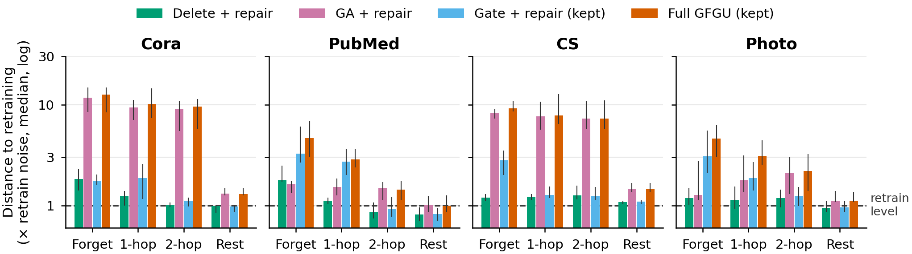
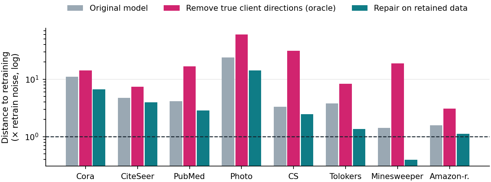
The diagnosis is that a deleted node influences the model through two channels. Its features reach its neighbours through message passing (the structural channel), and its training signal is mixed into the shared weights (the contribution channel). In an iteratively trained network the second channel is entangled: every gradient step mixes every node's influence into every weight, so it cannot be taken out cleanly afterwards, not even by an oracle. That points to a design principle: train the model so that each node's contribution stays a separate, additive term, and give each channel its own gate.
2What "closed form" means
A traditional GNN is trained iteratively: predict, measure the error, nudge every weight a little, and repeat thousands of times. A closed-form model is trained in one step, by a formula that gives the best weights directly. Ridge regression is the classic example: for features φ and labels y, the best weights are
The data enters only through two sums, one term per training node. Removing a node therefore means removing its term and solving again, and the result is mathematically the model that would have been trained without it. Iterative training has no such structure: each node's influence is spread over thousands of steps, each of which depended on all the others.
Try it. Twelve nodes on a small graph, two classes. Each node's features are averaged with its neighbours' (one hop). Both panels fit the same linear model with the same loss: on the left by gradient steps, on the right in closed form. Click a node to delete it.
Solid line: each model's decision boundary. Dashed line: the model retrained from scratch without the deleted node. Grey arrows: neighbours whose averaged features changed when the node left the graph (the structural channel). This toy model is convex, so fine-tuning would reach the retrained model given enough steps; the federated GNNs we study are not, and in our experiments fine-tuning kept a measurable gap (Section 3, "Why the closed form is essential").
3Method in detail
Step 1: features without training
Each client computes, on its own subgraph, a feature vector φ for every node: the node's own features and the average of its neighbours' features over K hops (K = 1 to 3, as in SGC and SIGN), optionally passed through a fixed random nonlinear layer that helps on heterophilous graphs. Nothing here is learned from data, so nothing in the features depends on data that may later be deleted.
Step 2: what clients share
Each client sends two tables computed over its training nodes, once:
| Table | Size | What one entry means | What it reveals in aggregate |
|---|---|---|---|
| Gk = Σ φiφi⊤ | d × d | how strongly features a and b occur together, summed over the client's training nodes | the number of training nodes, feature co-occurrence, and the space the training nodes span |
| Bk = Σ φiyi⊤ | d × C | column c is the sum of the feature vectors of the client's training nodes in class c | how many training nodes each class has, and each class's average features |
A three-node example. With features (1, 0, 1), (0, 1, 1) and (1, 1, 1), where the last entry is a constant and nodes 1 and 3 are in class 1, G has 3 in its bottom-right corner (three training nodes), and B's constant row reads (2, 1): two nodes in class 1, one in class 2. The server adds every client's tables and solves for W once. Removing a client means dropping its tables; removing a node means the owning client re-sends its tables without that node, with its neighbours' rows recomputed.
| Federated GCN (FedAvg) | Ours (closed form, two gates) | |
|---|---|---|
| What is trained | weights inside every message-passing layer | one linear classifier; message passing is a fixed recipe |
| What clients send | model updates, every round (e.g. 100 rounds) | two tables of totals, once |
| Communication per client | Cora 73.8 MB, Photo 38.6 MB, Minesweeper 0.5 MB (100 rounds) | Cora 4.3 MB, Photo 12.7 MB, Minesweeper 4.5 MB |
| Unlearning | approximate (ascent, fine-tuning, gating) or full retraining | subtract and re-solve; identical to retraining |
| Client needed online to forget it? | usually, for its data | no: the server drops its totals |
| Expressiveness | learned, nonlinear message passing | fixed propagation plus a linear classifier |
Step 3: two gates
Every node, edge and client carries two gates, one per channel of influence:
The structural gate removes a node from its client's graph before features are averaged, so its neighbours' features are recomputed exactly; deleting a node changes features only within K+1 hops, because removing it also changes its neighbours' degrees. The contribution gate removes the node's terms from the client's tables. Requests can be quarantined first (gates closed, totals kept, so the change can be undone) and erased later (totals deleted). Exactness holds under stated conditions: hyperparameters fixed in advance, random features drawn from a fixed seed, and stored totals actually erased.
Why the closed form is essential
The gates alone are not enough; the closed form is what makes them exact. We trained the same linear model on the same features by federated gradient descent and unlearned by deletion plus fine-tuning. The membership signal of the deleted nodes stayed above the retrained model's, and fine-tuning drifted away from retraining as it continued, while the closed-form model matched retraining exactly.
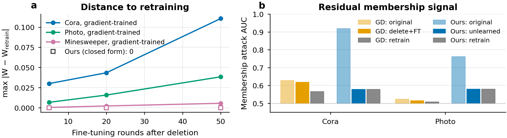
4Results under PAGE's protocol
We follow the benchmark protocol of PAGE (AAAI 2026): Louvain clients with their client counts, 20% of clients removed for client unlearning, and 10% of every client's nodes removed for node unlearning. In every run, our unlearned model equals our retrained model.
| Client unlearning (20% of clients) | Node unlearning (10% of nodes) | ||||||||
|---|---|---|---|---|---|---|---|---|---|
| Dataset | Clients | Retrain (rep.) | PAGE (rep.) | Ours | MIA | Retrain (rep.) | PAGE (rep.) | Ours | MIA |
| Cora | 5 | 83.98 | 83.91 | 83.48 | 0.87 → 0.56 | 78.65 | 81.29 | 81.47 | 0.87 → 0.48 |
| PubMed | 5 | 83.90 | 83.57 | 88.40 | 0.68 → 0.53 | 83.91 | 84.39 | 88.13 | 0.69 → 0.51 |
| CS | 10 | 82.18 | 78.66 | 93.36 | 0.96 → 0.50 | 87.74 | 88.66 | 93.59 | 0.92 → 0.51 |
| Photo | 10 | 78.41 | 69.73 | 90.86 | 0.81 → 0.49 | 88.62 | 88.84 | 92.22 | 0.87 → 0.59 |
| Tolokers | 15 | 78.52 | 78.52 | 82.70 | 0.61 → 0.52 | 78.52 | 78.69 | 80.22 | 0.58 → 0.49 |
| Minesweeper | 15 | 79.88 | 80.06 | 84.02 | 0.53 → 0.50 | 79.90 | 79.92 | 83.56 | 0.51 → 0.47 |
| Amazon-ratings | 20 | 41.09 | 40.75 | 42.33 | 0.48 → 0.45 | 46.58 | 46.21 | 42.04 | 0.54 → 0.50 |
Ours: mean over 5 seeds. PAGE and its retrain baseline as reported in their paper (their pipeline, not a paired comparison). MIA: loss-attack AUC on planted canaries, original model → after unlearning; identical to retraining in every run. Bold marks the highest accuracy per row.
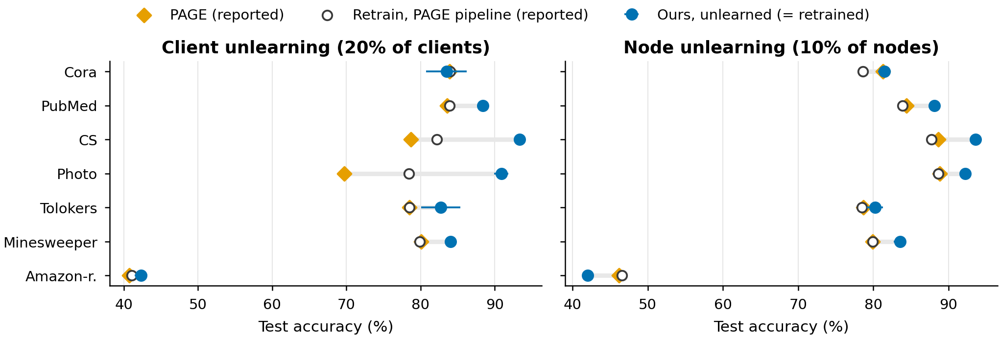
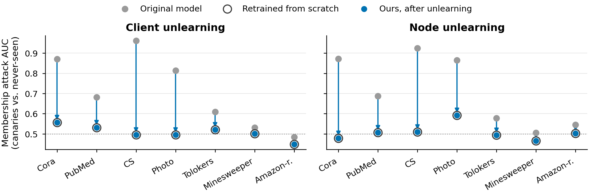
5Why two gates
We split the effect of a deletion into its two channels and measured, on eight datasets, how much of retraining's effect each gate recovers alone. The structural channel is under 7% of the change in the shared statistics, yet it accounts for most of the change in the forgotten nodes' direct neighbours. The contribution channel accounts for nearly all of the change on the forgotten nodes and on other clients.
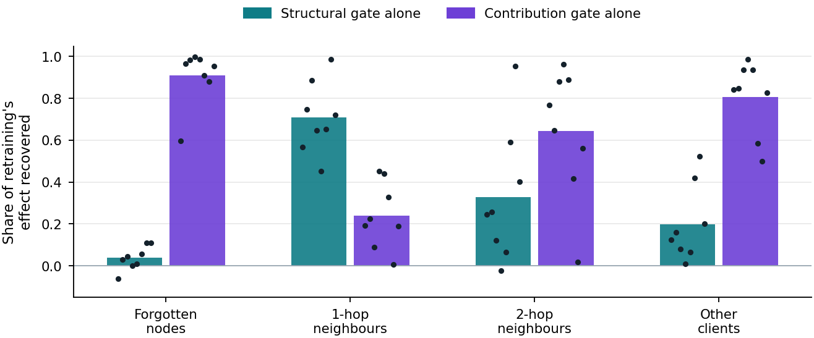
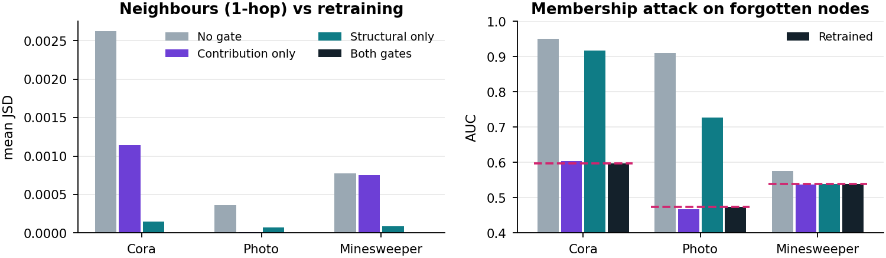
6Robustness
Exactness held in every one of 688 recorded checks: deletion ratios up to 50%, 20 mixed requests in a row, edge and feature deletion, different partitions and client counts, single and double precision, and every hyperparameter setting tested.
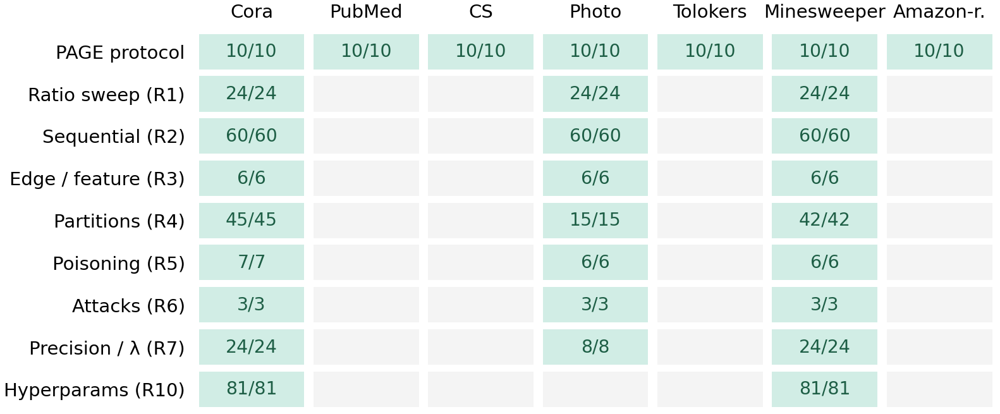
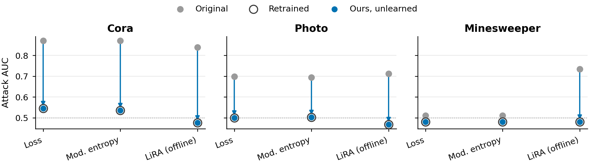
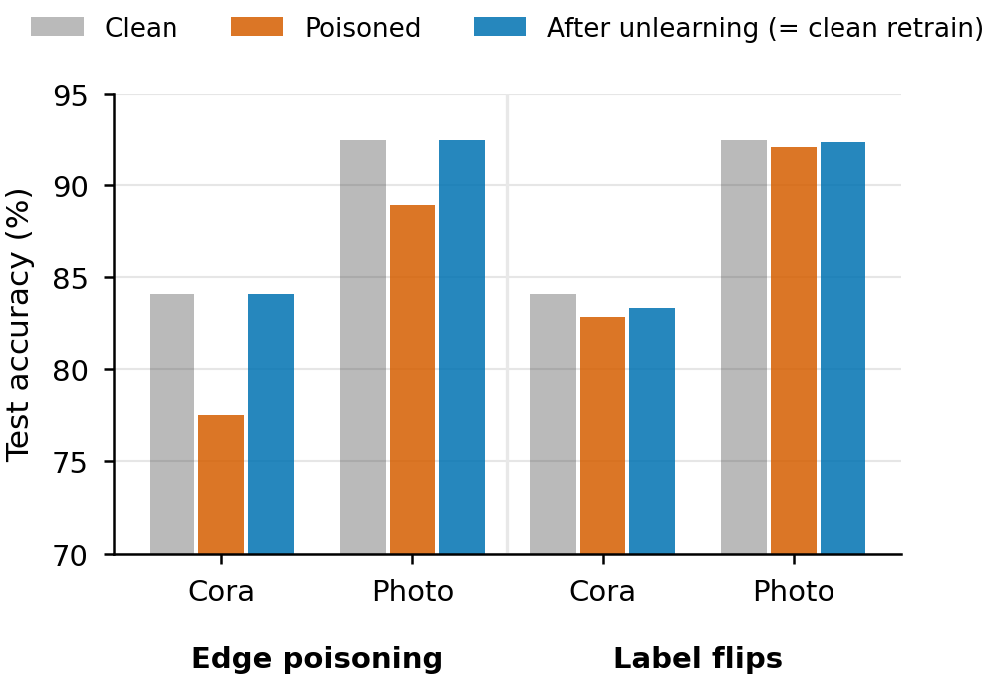
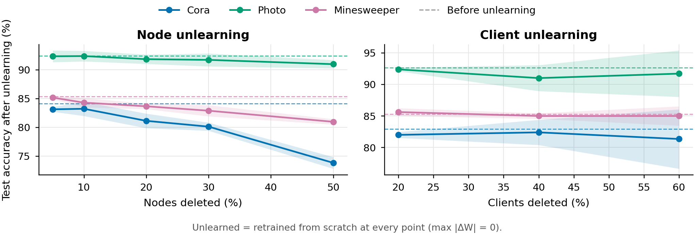
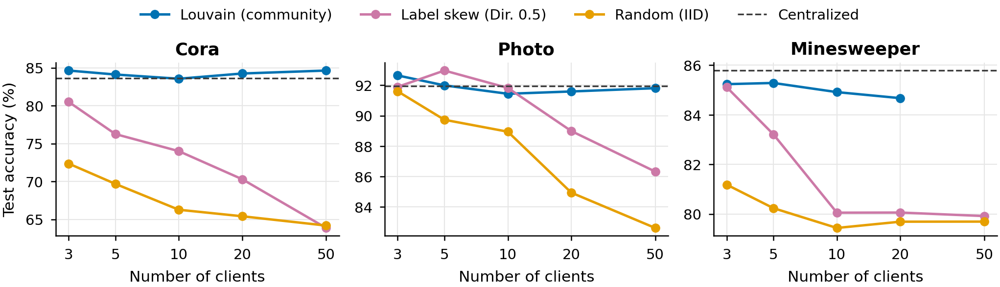
7Does sharing summed statistics leak more?
Yes, at full dimension, and it is worth being precise about how. A client's Gk pins down the exact space spanned by its training nodes' feature vectors. When a client has fewer training nodes than feature dimensions, a server that knows a candidate node's features can check whether that vector lies inside the space, and so whether the node was trained on. Against this attack the totals leak almost perfectly (AUC 0.99 on Cora), and summing over clients with secure aggregation does not help while the total number of training nodes is below the dimension.
We compared this with what federated gradient descent shares, on the same model and features. Model updates leak too, increasingly with more rounds, but less: on Cora, 0.97 for our totals against 0.70 for 300 rounds of FedAvg updates, and 0.98 against 0.77 in the one run where FedAvg reached the same accuracy. So the shared statistics do expose more about training membership than gradient updates. Deletion messages are a second channel: an unbatched node deletion reveals that node's row to the server, as comparing models before and after any exact unlearning does.
What the released model reveals is a separate question. There, at matched membership leakage, our model was more accurate than a federated GCN on Cora (LiRA AUC 0.67 against 0.63, at 82.5% against 71.1% accuracy).
The protection we use combines secure aggregation with a feature dimension of at most half the number of training nodes, so the training nodes fill the whole space and the attack has nothing to exploit:
| Dataset | Accuracy, unprotected | Accuracy, protected | Change | Server attack AUC (0.5 = chance) |
|---|---|---|---|---|
| Cora | 82.5 | 81.9 | -0.6 | 0.51 |
| PubMed | 88.3 | 88.1 | -0.2 | 0.66 |
| CS | 93.5 | 92.9 | -0.5 | 0.50 |
| Photo | 91.5 | 90.9 | -0.7 | 0.64 |
| Tolokers | 81.5 | 81.5 | 0.0 | 0.54 |
| Minesweeper | 83.8 | 83.8 | 0.0 | 0.49 |
| Amazon-ratings | 42.2 | 42.2 | 0.0 | 0.53 |
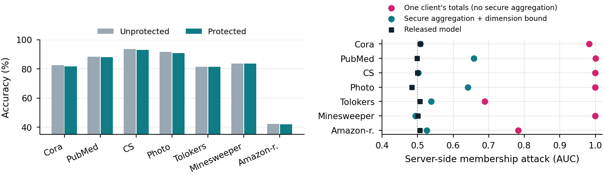
The dimension bound is our heuristic, validated against this one attack; it is not a formal guarantee, and PubMed and Photo keep a partial leak because their raw features are sparse. Standard differential privacy on full-dimensional totals collapsed accuracy in our tests (Cora 82.9% to 31.2% at ε = 8); a reduced-dimension private variant is in progress.
8Limitations
- Expressiveness. Message passing is a fixed recipe and only the final classifier is learned. Accuracy is below PAGE's reported numbers on Amazon-ratings at node level (42.0% against 46.6%), and the model is sensitive to the ridge strength λ, which must be chosen on validation data in advance.
- Partitions. Accuracy holds with community-structured clients but drops with random or label-skewed clients (Cora: 84% with Louvain clients, 64% with 50 random clients).
- Edges between clients. Clients are disconnected subgraphs. When subgraphs connect, deleting a node also changes features in other clients, which needs a cross-client protocol we have not built.
- Privacy of what is shared. Without protection, the totals and deletion updates reveal training membership to the server, more than gradient updates do. The protection we use is heuristic, leaves partial leaks on two datasets, and requires secure aggregation; formal differential privacy is not yet viable at full dimension.
- Memorisation of retained data. Exact unlearning makes the model exactly as private as retraining, no more. The model at its validation-chosen λ is somewhat more exposed to membership attacks than a federated GCN; a larger λ trades accuracy for less exposure.
- Costs. Communication is lower than FedAvg on Cora and Photo but higher on Minesweeper, where features are tiny, and the server stores d × d totals per client (42 to 252 MB in our runs).
- Scope of the evidence. All experiments use our own NumPy implementation. The comparison with PAGE uses their reported numbers; a paired comparison with PAGE and GNNDelete on identical splits, and results on ogbn-arxiv, are in progress.
- Conditions for exactness. Hyperparameters fixed in advance, random features drawn from a fixed seed, honest clients sending correct updates, and stored totals actually erased. Exact unlearning cannot recall models or predictions released before the request.
- Novelty. Closed-form graph unlearning and closed-form federated unlearning exist separately (references 7 and 8); our contribution is their combination for federated graphs, the two-gate design, and the evidence for why both gates and the closed form are needed.
9References
- PAGE: A unified approach for federated graph unlearning. AAAI 2026. arXiv:2508.02485
- T. N. Kipf, M. Welling. Semi-supervised classification with graph convolutional networks. ICLR 2017.
- B. McMahan et al. Communication-efficient learning of deep networks from decentralized data. AISTATS 2017.
- F. Wu et al. Simplifying graph convolutional networks (SGC). ICML 2019.
- F. Frasca et al. SIGN: Scalable inception graph neural networks. arXiv 2020.
- Y. Cao, J. Yang. Towards making systems forget with machine unlearning. IEEE S&P 2015.
- A. Gaur, A. Sharma. Closed-form node classification with exact graph unlearning. Preprint, 2026. arXiv:2605.25662
- Exact federated continual unlearning for ridge heads on frozen foundation models. Preprint, 2026. arXiv:2603.12977
- R. He et al. AFL: A single-round analytic approach for federated learning with pre-trained models. CVPR 2025.
- L. Bourtoule et al. Machine unlearning. IEEE S&P 2021.
- M. Chen et al. Graph unlearning. ACM CCS 2022.
- J. Cheng et al. GNNDelete: A general strategy for unlearning in graph neural networks. ICLR 2023.
- W. Cong, M. Mahdavi. GraphEditor: An efficient graph representation learning and unlearning approach. 2022.
- G. Liu et al. FedEraser: Enabling efficient client-level data removal from federated learning models. IWQoS 2021.
- K. Bonawitz et al. Practical secure aggregation for privacy-preserving machine learning. ACM CCS 2017.
- N. Carlini et al. Membership inference attacks from first principles. IEEE S&P 2022.
- L. Song, P. Mittal. Systematic evaluation of privacy risks of machine learning models. USENIX Security 2021.
- M. Chen et al. When machine unlearning jeopardizes privacy. ACM CCS 2021.
- L. Zhu et al. Deep leakage from gradients. NeurIPS 2019.
- A. Rahimi, B. Recht. Random features for large-scale kernel machines. NeurIPS 2007.
- V. D. Blondel et al. Fast unfolding of communities in large networks (Louvain). J. Stat. Mech. 2008.
- O. Platonov et al. A critical look at the evaluation of GNNs under heterophily. ICLR 2023.
10Citation
@misc{huda2026unlearning,
title = {Unlearning by Subtraction: Exact Federated Graph Unlearning with Two Gates},
author = {Huda, S M Asiful and Annunziata, Daniela and Izzo, Stefano and
Giampaolo, Fabio and Piccialli, Francesco},
year = {2026},
note = {Preprint in preparation}
}